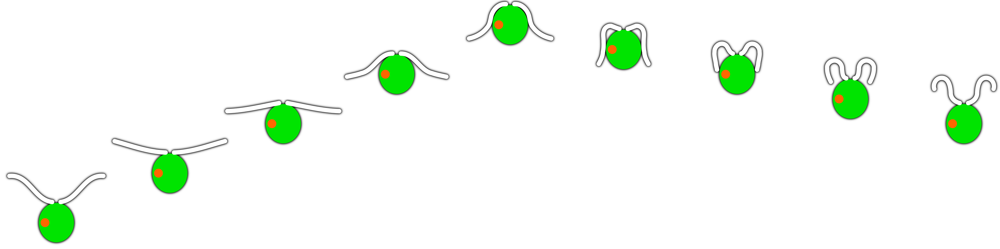
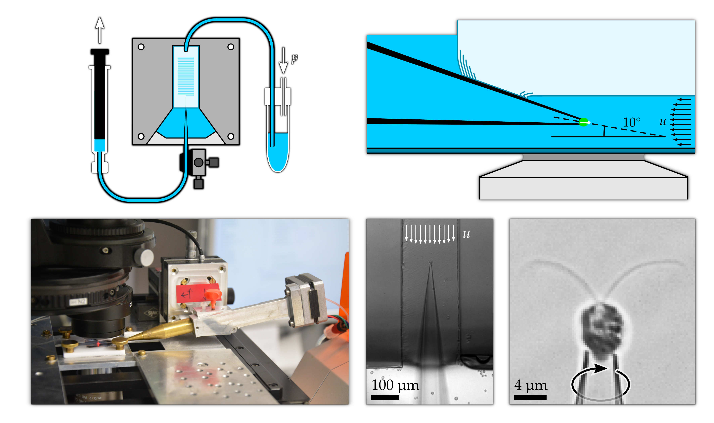
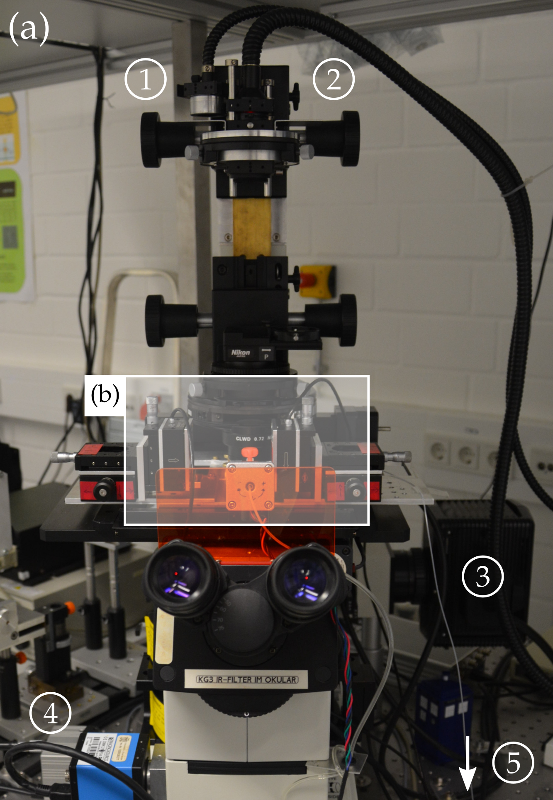
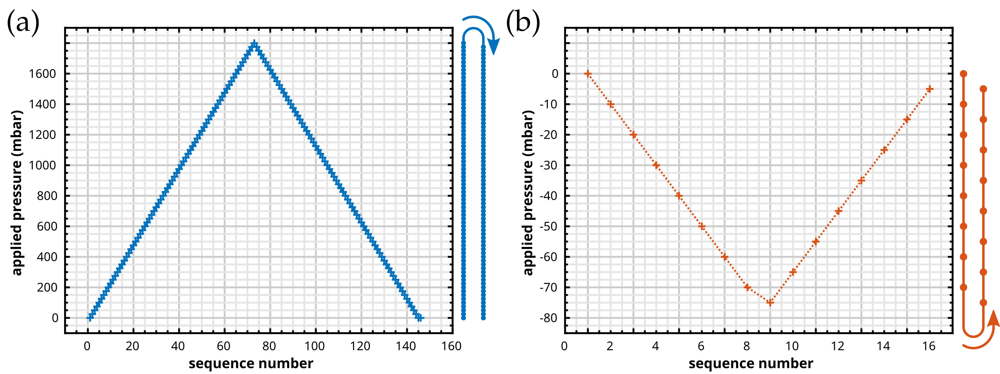
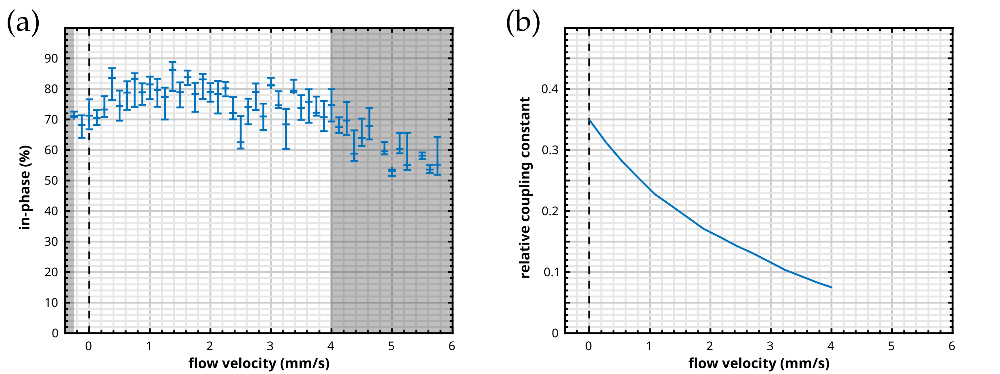

On the dynamics of the flagellar beat under load
Christian Ruloff

|

|
The eukaryotic flagellum:
a highly complex machine on a very small scale
a highly complex machine on a very small scale

|

|
https://commons.wikimedia.org/wiki/File:Eukaryotic_cilium_diagram_en.svg (modified)
How does it perform under load?
|
https://www.youtube.com/watch?v=Gs7ku8xA5so
|
||

|
||
|
https://www.youtube.com/watch?v=j3CuqRDGPmU
|
||
Swimming in the viscous regime is a tough job
|
Movies by Diego Saenz and Patrick Underhill at the University of Wisconsin-Madison
|
|
Stokes equations for homogeneous, incompressible fluids
|
Navier-Stokes equations
$\rho\partial_t u + \rho\left(u\cdot\nabla\right)\cdot u = f_{\textrm{external}} - \nabla p + \mu\Delta u$
$f_{inertia}$
$f_{stress}$
variation
convection
external source
internal source
diffusion
and
$\nabla u = 0$
low Reynolds number regime $\left(\mathcal{R}e = \frac{\rho l u}{\mu} < 2000\right)\Rightarrow$ inertia negligible
$ = 0$ with the point force $F_j\delta\left(r\right)$ acting on the fluid and the Oseen tensor $G_{ij} = \frac{1}{8\pi\mu}\left(\frac{1}{\left|r\right|} + \frac{r_i\cdot r_j}{\left|r\right|^3}\right)$ |
Breastroke-like beating pattern of Chlamydomonas reinhardtii
is divided into power- and recovery-stroke
is divided into power- and recovery-stroke
|  | |
Long-term cultivation...
(in agar-solidified TAP medium)
(in agar-solidified TAP medium)

...and remobilisation
(in liquid TAP medium) |
Separating a good from a bad culture
Langevin dynamics
|
$m\ddot{x} = F_{rand} + F_{friction}$
with$\quad\langle x\cdot F_{rand}\rangle = \langle x\rangle\langle F_{rand}\rangle = 0\quad$and$\quad\frac{1}{2}m\langle\dot{x}\rangle^2 = \frac{1}{2}k_bT$
$\langle x^2\rangle\left(t\right) = 2\cdot\frac{k_bT}{6\pi\mu r}t = 2\cdot Dt$
Example:
$m\frac{\textrm{d}u}{\textrm{d}t} = -6\pi\mu r u\quad\Leftrightarrow m\int\limits_{u_0}^{u\left(t\right)}\frac{1}{u'}\textrm{d}u' = -6\pi\mu r\int\limits_{0}^{t}\textrm{d}t'$ $\Leftrightarrow\dots\Leftrightarrow u\left(t\right) = u_0\cdot\textrm{exp}\left(-6\pi\mu r t / m\right)$ |
Micropipettes
provide strong fixation and reliable orientation
provide strong fixation and reliable orientation
|

and microfluidics
enable precise flow control |
Experimental setup
|  |

|
Experimental setup
How to design a microfluidics chip?


Kirchhoff's circuit laws
Hagen-Poiseuille's law
|
||||||||
How to calculate the hydraulic resistance?
|
$u_x\left(y, z\right) = \Delta p\,\frac{4h^2}{\pi^3\mu l}\sum\limits_{\textrm{n, odd}}^\infty\frac{1}{n^3}\left[1 - \frac{\cosh\left(\frac{n\pi y}{h}\right)}{\cosh\left(\frac{n\pi w}{2h}\right)}\right]\sin\left(\frac{n\pi z}{h}\right)$
$Q = 2\int\limits_0^\frac{w}{2}\int\limits_0^h u_x\left(y, z\right)\mathrm{d}y\,\mathrm{d}x = \Delta p\,\frac{w h^3}{12\mu l}\left[1 - \sum\limits_{\textrm{n, odd}}^\infty\frac{192}{\left(n\pi\right)^5}\frac{h}{w}\tanh\left(\frac{n\pi}{2}\frac{w}{h}\right)\right] = \frac{\Delta p}{R}$
|
How to calculate the peak velocity?
|
$\bar{u}_j = Q\cdot\frac{1}{w_j\,h_j} = \frac{\Delta p}{\sum\limits_j R_j}\cdot\frac{1}{w_j\,h_j}$
$u^{max}_j = \bar{u}_j\left(\frac{s + 1}{s}\cdot\frac{r + 1}{r}\right)$
with $s\approx 1.7 + \frac{\epsilon_j^{1.4}}{2}$, $r\approx\begin{cases} 2 & \textrm{if }\epsilon_j\geq3\\ 2 + 0.3\left[\epsilon_j^{-1}-\frac{1}{3}\right] & \textrm{if }\epsilon_j<3\end{cases}$, and $\epsilon_j = w_j\,/\, h_j$
|
Microfluidics parameter
| type | length (mm) | width (µm) | height (µm) | resistence (mPa s / µl) |
| pre-resistor channel | ||||
| design | 704.65 | 50.00 | 50.00 | − |
| chip A | − (<4%) | 48 ± 2% | 52 ± 4% | 3 ± 9% |
| chip B | − (<4%) | 56 ± 4% | 50 ± 1% | 3 ± 6% |
| chip C | − (<4%) | 58 ± 2% | 52 ± 4% | 2 ± 12% |
| sample channel | ||||
| design | 3.50 | 200.00 | 50.00 | − |
| chip A | − (<4%) | 206 ± 1% | 52 ± 4% | 0.002 ± 12% |
| chip B | − (<4%) | 215 ± 1% | 50 ± 1% | 0.002 ± 4% |
| chip C | − (<4%) | 215 ± 1% | 52 ± 4% | 0.002 ± 12% |
How to fabricate a microfluidics chip?

|
The flow field is measured using µPIV
|
|
The flow speed depends linearly on the pressure
with negligible batch related deviations
with negligible batch related deviations

|
The evolution of the desired flow speed is slightly delayed
and more or less pronounced depending on the jump direction
and more or less pronounced depending on the jump direction

|
Calibration of the pressure controller
enables high precision measurements
enables high precision measurements
High precision flagellar tracking
reveals full dynamics of flagellar beating
reveals full dynamics of flagellar beating
|
|
Precise tracking of the cell body
permits reliable cell masking
permits reliable cell masking

|
Full flagellar length is tracked
with only some flagellar points missing
with only some flagellar points missing
We restrict ourselves to high quality data sets

n = 6 flagella
|
Measurement protocol for load-response experiments
High-dimensional measurement data is reduced to a two-dimensional
limit cycle representation
limit cycle representation

$Z\left(t\right) = \beta_1\left(t\right) + \textrm{i}\beta_2\left(t\right) = A\left(t\right)\textrm{e}^{\textrm{i}\theta\left(t\right)}$ $\blacktriangleright$ $\hat{Z}\left(\varphi\right) = A\left(\varphi\right)\,e^{\textrm{i}\varphi}$
|
High-dimensional measurement data is reduced to a two-dimensional
limit cycle representation
limit cycle representation
|
with $A\left(t\right) = \lvert Z\left(t\right)\rvert$ and $\theta = \textrm{atan}\left(\beta_2\left(t\right) / \beta_1\left(t\right)\right)$
|
A transformation that guarantees $\partial_t\varphi\left(t\right) = const. = \dot{\varphi}$
|
$= \Theta + \sum_{n\neq 0}\frac{S_n}{\textrm{i}n}\left(\textrm{exp}\left(\textrm{i}n\Theta\right)- 1\right) = \Theta + \Theta_{correction}$ |
Limit cycle reconstruction
|
|
The flagellar load response is characterised by
the amplitude susceptibility $\chi_{A}$ and the phase speed susceptibility $\chi_{\dot{\varphi}}$
the amplitude susceptibility $\chi_{A}$ and the phase speed susceptibility $\chi_{\dot{\varphi}}$
|
The flagellar load response
is highly phase-dependent
is highly phase-dependent

|
Comparison of flagellar efficiencies
| efficiency | beating frequency | cell type | reference |
| 0.1 | 40 | Paramecium caudatum | [61] |
| 0.15 - 0.35 | 8 | mammalian sperm (rat, mouse) | [25] |
| 0.21 | 50 | C. reinhardtii (SAG 11-32c mt-) | [64] |
| 0.4 | 30 | Tetrahymena pyriformis | [11] |
A generic theory of flagellar oscillations
is calibrated by means of experiments
is calibrated by means of experiments

friction forces $P\left(q\right) = \left[\Gamma^{(h)} + \Gamma^{(i)}\right]\cdot\dot{q}$ $\dots\Leftrightarrow\Gamma^{\left(i\right)}_{kl} = \left(\frac{1}{\eta} - 1\right)\Gamma^{\left(h\right)}_{kl}\quad$and $\Gamma^{\left(i\right)}_{ky} = \Gamma^{\left(i\right)}_{yk} = \Gamma^{\left(i\right)}_{yy} = 0\quad$with$\quad k,l\in\{\varphi, A\}$
$\Rightarrow\left[\dot{\varphi}, \dot{A}\right]\cdot\left[\begin{array}{lll}
\Gamma^{\left(h\right)}_{\varphi\varphi} & \Gamma^{\left(h\right)}_{\varphi A}\\
\Gamma^{\left(h\right)}_{A\varphi} & \Gamma^{\left(h\right)}_{AA}
\end{array}\right]_{\left(\varphi, A\right)} = \dot{\varphi}_0\left[\begin{array}{lll}
\Gamma^{\left(h\right)}_{\varphi\varphi}\\
\Gamma^{\left(h\right)}_{A\varphi}
\end{array}\right]_{\left(\varphi, A_0\right)} - \eta\left[\begin{array}{lll}
\Gamma^{\left(h\right)}_{\varphi y} u\\
\Gamma^{\left(h\right)}_{Ay} u + \kappa_A\Delta A
\end{array}\right]_{\left(\varphi, A\right)}$
|
How to derive the model equation?
|
$Q\left(q\right) = P\left(q\right)$
with generalised coordinates: $\quad q = \left[\varphi, A, y\right]'$
$\Rightarrow P = P^{\left(i\right)} + P^{\left(h\right)} = \Gamma^{\left(i\right)}\dot{q} + \Gamma^{\left(h\right)}\dot{q}$ $\Rightarrow\Gamma^{\left(i\right)}_{kl} = \left(\frac{1}{\eta} - 1\right)\Gamma^{\left(h\right)}_{kl}\quad$ and $\quad\Gamma^{\left(i\right)}_{ky} = \Gamma^{\left(i\right)}_{yk} = \Gamma^{\left(i\right)}_{yy} = 0\quad$ with $\quad k,l\in\{\varphi, A\}$ $\Rightarrow Q\left(q\right) = P\left(q_0\right) = \Gamma_{\left(\varphi, A_0\right)}\cdot\dot{q}_0 = \dot{\varphi}_0\cdot\left[\Gamma_{\varphi\varphi}, \Gamma_{A\varphi}, \Gamma_{y\varphi}\right]'_{\left(\varphi, A_0\right)}$ |
How to derive the model equation?
|
with$\quad\tau_A\dot{A}=-\Delta A\quad$and$\quad\Delta A = \left(A - A_0\right)$ $\Leftrightarrow\dot{\varphi}_0\left[\begin{array}{lll} \Gamma^{\left(h\right)}_{\varphi\varphi} / \eta \\ \Gamma^{\left(h\right)}_{A\varphi} / \eta \end{array}\right]_{\left(\varphi, A_0\right)} - \left[\begin{array}{lll} 0 \\ \kappa_A\Delta A \end{array}\right]_{\left(\varphi, A\right)} = \left[\begin{array}{lll} \Gamma^{\left(h\right)}_{\varphi\varphi} / \eta & \Gamma^{\left(h\right)}_{\varphi A} / \eta & \Gamma^{\left(h\right)}_{\varphi y} \\ \Gamma^{\left(h\right)}_{A\varphi} / \eta & \Gamma^{\left(h\right)}_{AA} / \eta & \Gamma^{\left(h\right)}_{Ay} \end{array}\right]_{\left(\varphi, A\right)}\cdot\left[\begin{array}{lll} \dot{\varphi}\\ \dot{A}\\ u \end{array}\right]$ $\Leftrightarrow\dot{\varphi}_0\left[\begin{array}{lll} \Gamma^{\left(h\right)}_{\varphi\varphi}\\ \Gamma^{\left(h\right)}_{A\varphi} \end{array}\right]_{\left(\varphi, A_0\right)} - \eta\left[\begin{array}{lll} 0 \\ \kappa_A\Delta A \end{array}\right]_{\left(\varphi, A\right)} = \left[\dot{\varphi}, \dot{A}, u\right]\left[\begin{array}{lll} \Gamma^{\left(h\right)}_{\varphi\varphi} & \Gamma^{\left(h\right)}_{\varphi A} & \eta\cdot\Gamma^{\left(h\right)}_{\varphi y} \\ \Gamma^{\left(h\right)}_{A\varphi} & \Gamma^{\left(h\right)}_{AA} & \eta\cdot\Gamma^{\left(h\right)}_{Ay} \end{array}\right]_{\left(\varphi, A\right)}$ $\Leftrightarrow\dot{\varphi}_0\left[\begin{array}{lll} \Gamma^{\left(h\right)}_{\varphi\varphi}\\ \Gamma^{\left(h\right)}_{A\varphi} \end{array}\right]_{\left(\varphi, A_0\right)} - \eta\left[\begin{array}{lll} 0 \\ \kappa_A\Delta A \end{array}\right]_{\left(\varphi, A\right)} = \left[\dot{\varphi}, \dot{A}\right]\left[\begin{array}{lll} \Gamma^{\left(h\right)}_{\varphi\varphi} & \Gamma^{\left(h\right)}_{\varphi A} \\ \Gamma^{\left(h\right)}_{A\varphi} & \Gamma^{\left(h\right)}_{AA} \end{array}\right]_{\left(\varphi, A\right)} + \eta\left[\begin{array}{lll} \Gamma^{\left(h\right)}_{\varphi y} u \\ \Gamma^{\left(h\right)}_{Ay} u \end{array}\right]_{\left(\varphi, A\right)}$ $\Leftrightarrow$$\dot{\varphi}_0\left[\begin{array}{lll} \Gamma^{\left(h\right)}_{\varphi\varphi}\\ \Gamma^{\left(h\right)}_{A\varphi} \end{array}\right]_{\left(\varphi, A_0\right)} - \eta\left[\begin{array}{lll} \Gamma^{\left(h\right)}_{\varphi y} u\\ \Gamma^{\left(h\right)}_{Ay} u + \kappa_A\Delta A \end{array}\right]_{\left(\varphi, A\right)} = \left[\dot{\varphi}, \dot{A}\right]\cdot\left[\begin{array}{lll} \Gamma^{\left(h\right)}_{\varphi\varphi} & \Gamma^{\left(h\right)}_{\varphi A}\\ \Gamma^{\left(h\right)}_{A\varphi} & \Gamma^{\left(h\right)}_{AA} \end{array}\right]_{\left(\varphi, A\right)}$ |
Active driving forces $Q$ and amplitude stiffness $\kappa_A$
are phase-dependent
are phase-dependent

|
Hydrodynamic friction forces acting on the flagellum
are computed by means of numerically solving the Stokes equation for viscous flow
are computed by means of numerically solving the Stokes equation for viscous flow
Phase-locking of the flagellar beat to external oscillatory flow
agrees with determined flagellar efficiency
agrees with determined flagellar efficiency
|
|
Two dynamic modes of beating for positive load...
(chiral and tremor-like beating)
(chiral and tremor-like beating)
...which do not exist for negative load
A third, occasionally observed
beating mode comparable to a photoshock response
beating mode comparable to a photoshock response
Dynamics of the proximal end of the flagella

|
Measurement protocol for stalling experiments
|  |
Frequency response of the flagellar beat to positive load
reveals dynamic beating modes and shows hysteresis
reveals dynamic beating modes and shows hysteresis
|
|
Frequency response of the flagellar beat to positive load
reveals dynamic beating modes and shows hysteresis
reveals dynamic beating modes and shows hysteresis
|
|
Frequency response of the flagellar beat to positive load
reveals dynamic beating modes and shows hysteresis
reveals dynamic beating modes and shows hysteresis

|
Frequency response of the flagellar beat to negative load
shows only slight hysteresis
shows only slight hysteresis
|
|
Frequency response of the flagellar beat to negative load
shows only slight hysteresis
shows only slight hysteresis
|
|
Manifold response of cis- and trans-flagellum
to increasing external load
to increasing external load
|
|
Manifold but delayed response of cis- and trans-flagellum
to decreasing external load
to decreasing external load
|
|
Stalling velocities
are different for cis- and trans-flagellum
are different for cis- and trans-flagellum
|
|
The flagellar load response shows hysteresis
The flagellar load response is sensitive to the load direction
Flagellar stalling shapes are dynamic
and identical for cis- and trans-flagellum
and identical for cis- and trans-flagellum

|
Flagellar stalling shapes are dynamic
and identical for cis- and trans-flagellum
and identical for cis- and trans-flagellum
The existence of two stalling states could explain the
hysteretic behaviour of the flagellar beat
hysteretic behaviour of the flagellar beat

|
How do flagella synchronise their beat?
|
https://www.youtube.com/watch?v=5v5eBf2KwF8
|
Flagella are interconnected at their basal bodies by striated fibres

|
In-phase synchronisation of the flagellar beat
depends on the applied load
depends on the applied load
|

|
In a system of two weakly coupled oscillators in the presence of noise,
phase dynamics obey the noisy Adler equation
phase dynamics obey the noisy Adler equation
|
$\Rightarrow$$\dot{\delta} = \Delta\omega - \kappa\sin\left(\delta\right) + \zeta\left(t\right)$
|
Flagellar dynamics can be described analogous to a particle moving in a
tilted washboard potential
tilted washboard potential
|
$\dot{\delta} = - U'\left(\delta\right) + \zeta\left(t\right)\quad$with$\quad U\left(\delta\right) = -\Delta\omega\cdot\delta - \kappa\cos\left(\delta\right)$
|
Flagellar synchronisation between nearby swimming cells
is quantified by means of the Kuramoto model
is quantified by means of the Kuramoto model
|
$\Rightarrow\dot{\theta}_i = \dot\varphi_0^i + \zeta_i\left(t\right) + \frac{\kappa}{N}\sum\limits_{j=1}^N\textrm{sin}\left(\theta_j - \theta_i\right)\quad i = 1\dots N$ limit cycle oscillators $\Rightarrow\dot{\theta}_i = \dot\varphi_0^i + \zeta_i\left(t\right) + \kappa\cdot r\cdot\sin\left(\psi - \theta_i\right)\quad$ with phase coherence $r$ and mean phase $\psi$ |
Distance-dependent phase coherence
reveals relatively short range hydrodynamic influence
reveals relatively short range hydrodynamic influence

$r\left(d\right) = \langle r\rangle_t\quad{\small\textrm{and}}\quad\langle r\left(d\right)\rangle_{N = \textrm{4}} = \underset{\textrm{(mean)}}{\textrm{0.5}}\pm\underset{\textrm{(s.e.)}}{\textrm{0.1}}$
|
Summary
|
$\blacktriangledown$ Phase-dependent flagellar load response
|
Hysteretic frequency response, stalling velocities, and dynamic beating modes depend on load direction $\blacktriangledown$

|
|
$\blacktriangledown$ Dynamic beating modes are flagellum-selective
|
$\blacktriangledown$ Distinct stalling states are responsible for hysteresis
$\blacktriangledown$ External load influences flagellar synchronisation
|
Outlook
|
Flow-dependent distance of basal bodies $\blacktriangleright$
might influence the in-phase synchronisation ability Changing the surrounding medium viscosity
in order to investigate hydrodynamic interactions Mutants with defective basal bodies
in order to investigate intra-cellular coupling Applying and releasing load quickly $\blacktriangleright$
in order to investigate the dynamic response of the flagellum Enhance image quality (for tracking of the basal body)
and increase recording time (to increase statistics) |
|
Thank you for your attention!